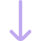
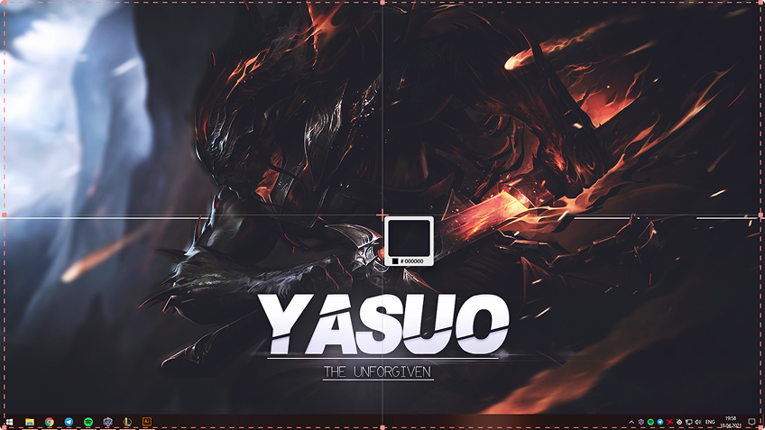
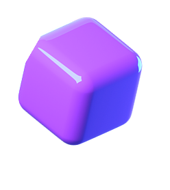
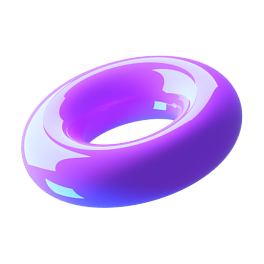

.png)

Делайте снимки и записывайте экран в 1 клик
Вместе со Screenshoter можно в один клик сделать снимок или записать происходящее на экране ПК, чтобы поделиться с кем угодно

Бесплатная программа для Windows
Встречайте — скриншоты и запись экрана 2 в 1
Больше не нужно искать две отдельные программы для скриншотов и записи экрана. Screenshoter поможет сделать снимок экрана, записать видео и поделиться им с кем угодно. Можно выделить весь экран, определенную область или активное окно
Снимок и запись экрана в 1 клик
Моментальная ссылка на файл
Удобный редактор снимков
Бесплатно и без регистрации

Запись экрана
Недостаточно снимков? Запишите происходящее на экране со своим голосом или звуком системы.
Достаточно нажать две кнопки мыши, выделить необходимую область и начнется запись видео с экрана. Быстро и без сложных настроек


В один клик
Не нужно запоминать комбинации клавиш на клавиатуре, чтобы сделать скриншот или начать записывать видео с экрана.
Просто нажмите две кнопки мыши или настройте горячую кнопку на любую удобную клавишу
.png)
Файлы хранятся в течение 1 года с момента создания. Можно их удалять самостоятельно. В истории программы доступны последние 5 скриншотов
Мгновенная ссылка
Мгновенное получение ссылки на снимок или видео. Вы только нажали Enter, а ссылка уже в буфере обмена. Перейдя по ссылке, можно будет посмотреть ваш снимок или записанное видео

И редактор снимков
Более 5 инструментов для редактирования. Выделяете область и редактируете.
Если неверно выбрали область — не беда, можно без проблем её передвинуть и/или изменить размер, не удаляя то, что уже нарисовано!

Выбирайте цвет и рисуйте карандашом

Используйте стрелку, круг или квадрат для выделения

Оставляйте комментарии

Размывайте необходимую область